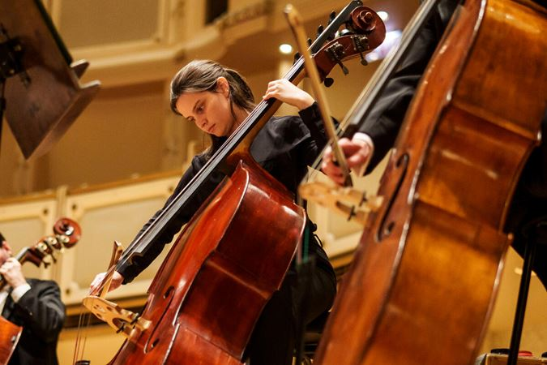

Updates
Website Maintenance 5/20/25- our website will be down on May 20th to fix some bugs in the program. We apologize for any inconvenience!
New Sight-reading Selections- check out the Practice Sessions tab for new sight-reading materials!
Welcoming Members to the Team- We welcome Isaac Schwartz to the OboeBard family, our new graphic designer!
Musician Spotlight
Professor Leslie Jacobsen currently teachers cello performance at the University of Wisconsin-Eau Claire. She received her bachelors of music from Lawerence University in 2001 and her masters at Lawrence University in 2006. Prof. Jacobsen has done incredible work in youth music programming and adaptive music! She has currently been promoting OboeBard in youth programming as a way to quickly and effectively improve music skills.
Newsletter
Our team here at OboeBard welcomes you to May! We hope your musical endeavours are going well as the world warms up. Here's what's on the docket for this month: Do you have questions about playing outside? We do! This month, we're talking with Dr. Mark Abrams about keeping your instrument in good condition and enjoying the sunshine Keep your eye on the updates page as we learn more from experts. If you're almost finished up with our current quests, fear not! Our team is currently hard at work on our next adventure: Marimba Magic. We hope you'll enjoy this lava-themed adventure in the next couple of weeks. Moving into the summer can be a tough time when it come to staying motivated on your music work, but we believe in you all, and hope this program continues pushing you in the right direction. We're sending good vibes! Happy practicing!